Why visualise?
Why visualise?
Why visualise?
How visualize conceptually?
How visualize conceptually?
- 1 Purpose vs Distraction
-
2
For checking vs sharing:Exploratory diagnostic plots ≠ Explanatory publication figures.
- 3 Narrative & Storyline
The Datasaurus Dozen Phenomenon
All 13 configurations share identical summary statistics:
X̄=54.26, Ȳ=47.83, SD_x=16.76, SD_y=26.93, r=-0.06

How visualize conceptually?
How visualize practically?
Eleven essential design principles for infectious disease models and analytics:
White Space
De-clutter margins to give key signals room to breathe
Log Axes
Crucial for exponential transmission phases & titers
Uncertainty
Always show 95% CrI / CI ribbons and sample spreads
Multi-Panel
Small multiples to isolate facets cleanly
0 Inclusion in Axis
Ground bar charts at zero; zoom responsibly for lines
Color Consistency
Colorblind-safe palettes; match colors across slides
Transparency
Use alpha blending to resolve dense overplotting
Simplicity
Maximise data-to-ink ratio; remove decorative 3D
Reference Points
Highlight R=1, non-inferiority margins & thresholds
Labels, Heading, Legends, ...
Clear titles, axis labels and legends so a figure stands alone
White Space
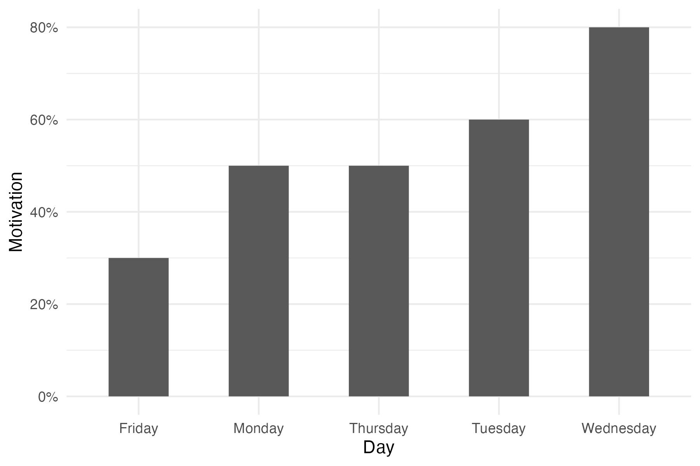
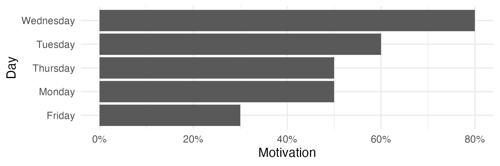
Log Axes
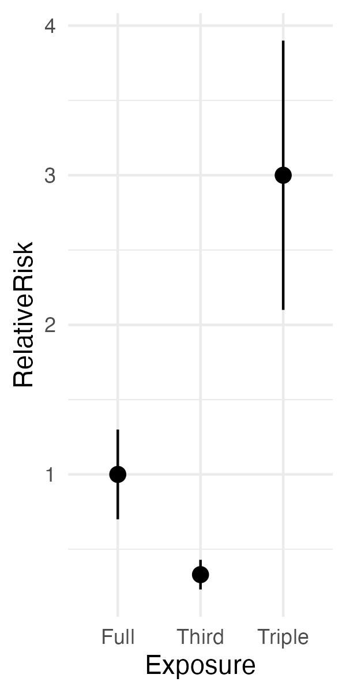
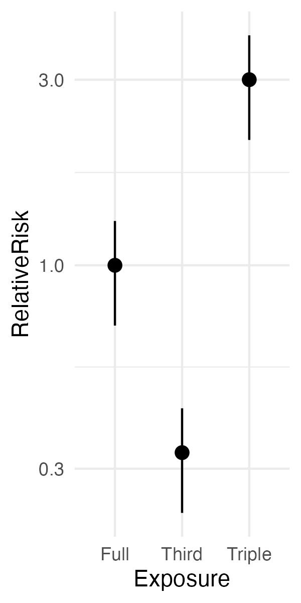
Uncertainty
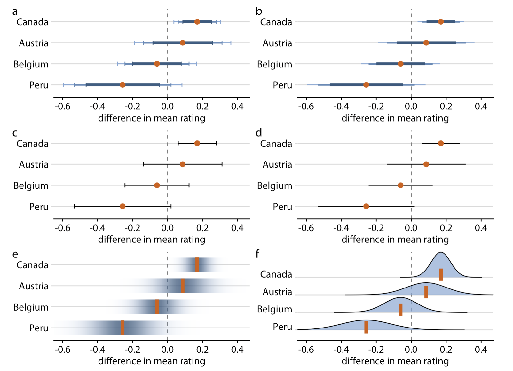
Multi-Panel

Zero Inclusion in Axis
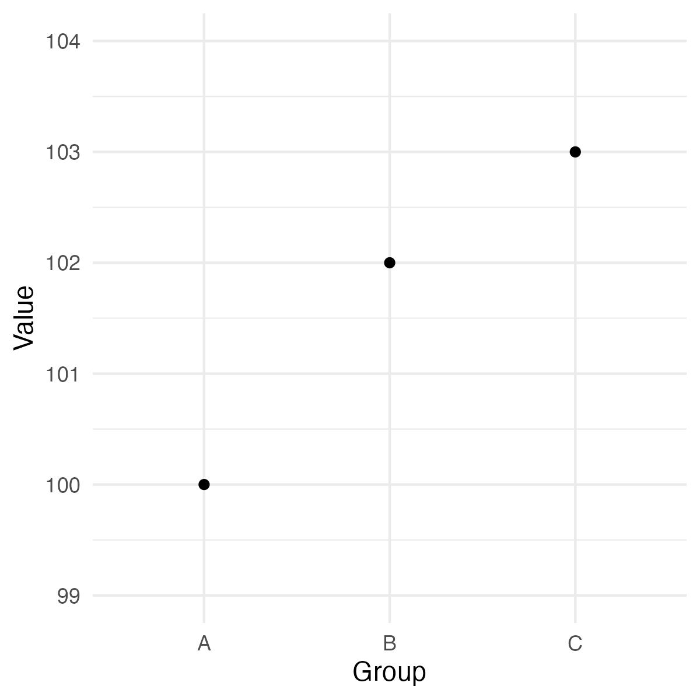
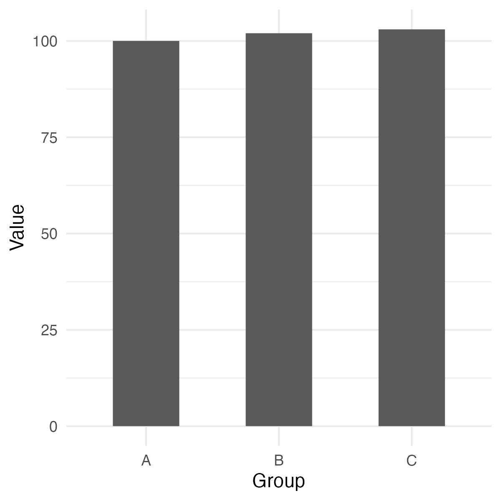
Color Consistency
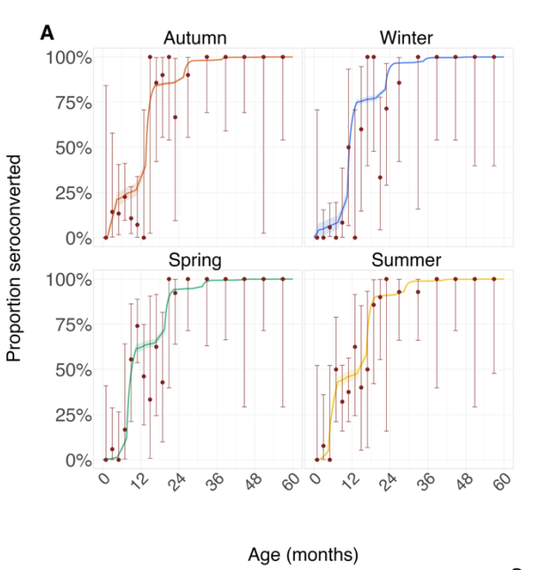
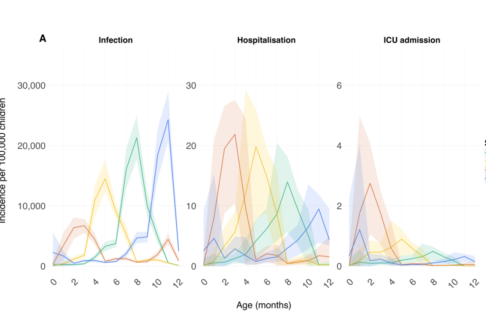
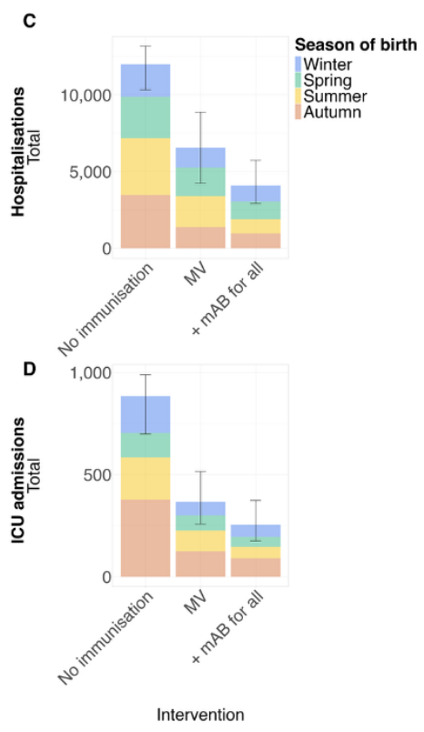
Transparency
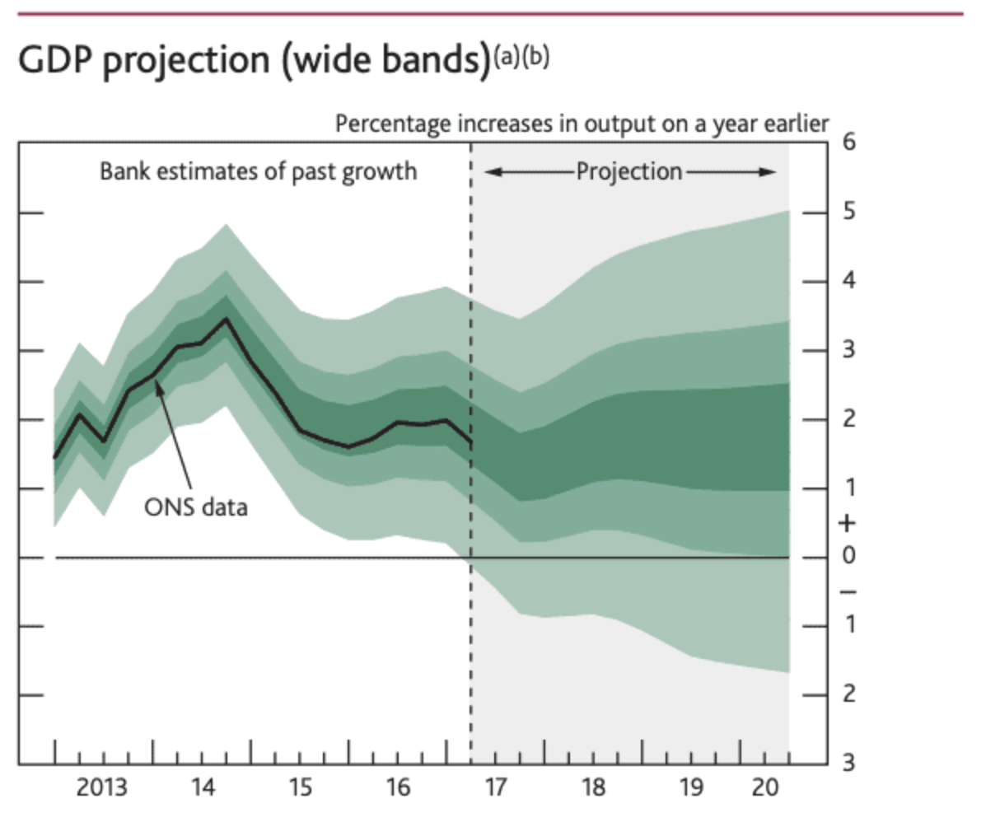
Simplicity
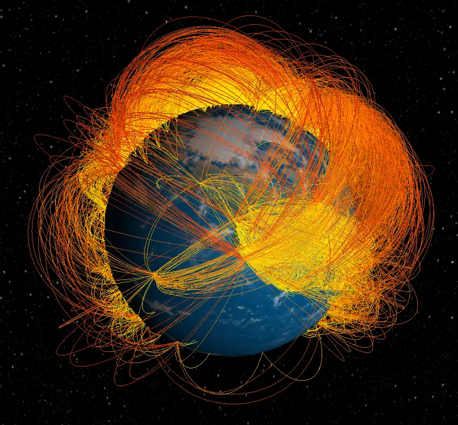
Reference Points
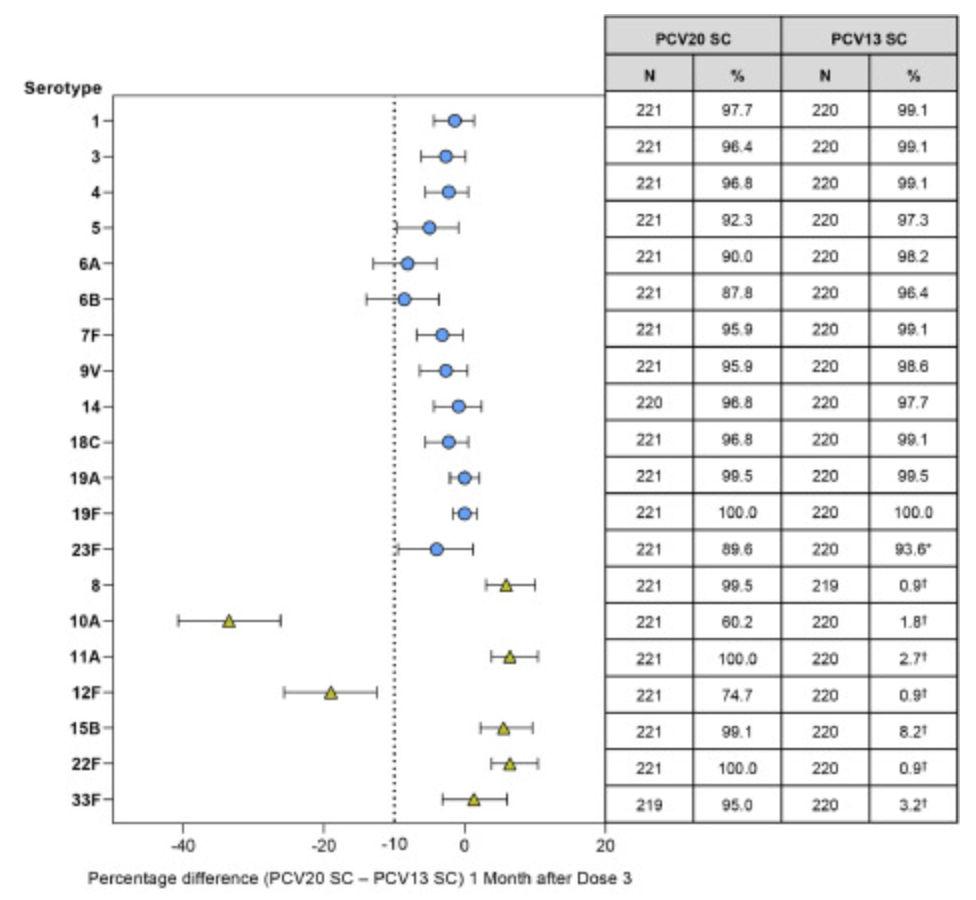
Labels, Heading, Legends, ...

Hands on part
🛠️
Pair Exercise
Challenge: "Improve the plot"
Aim: manuscript ready illustrationInspect the provided case-study figures with your partner and optimise the illustration: